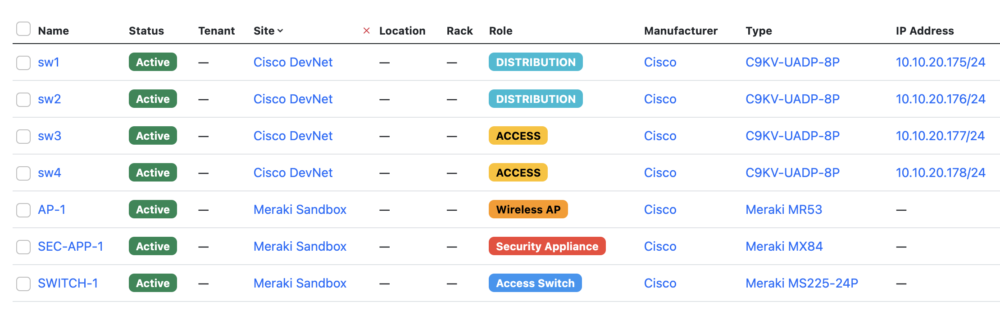

NetBox Integrations
NetBox Ansible Collection - Quick Start
A short guide to getting started with the Ansible Collection for Netbox.

The collection is available from Ansible Galaxy, and NetBox Labs and Red Hat customers can access the certified and supported collection, via Ansible Automation Hub. This doc is based on the Galaxy installation and shows how to use the collection from the command line, rather than from within Ansible Automation Hub.
Code Examples
All code used in the examples below can be found in the NetBox Learning git repository, in the directory netbox-ansible-collection-quick-start.
Collection Overview
The NetBox Ansible project provides an Ansible collection for interacting with NetBox, the leading solution for modeling and documenting modern networks. By combining the traditional disciplines of IP address management (IPAM) and datacenter infrastructure management (DCIM) with powerful APIs and extensions, NetBox provides the ideal "source of truth" to power network automation.
This Ansible collection consists of a set of modules to define the intended network state in NetBox, along with plugins to drive automation of the network using data from NetBox.
Requirements
- You must be running one of the two most recent releases of NetBox
- A NetBox write-enabled API token when using modules or a read-only token for the
nb_lookupandnb_inventoryplugins. - Python 3.10+
- Python modules:
- pytz
- pynetbox
- Ansible 2.15+
Note
This guide assumes you have a working NetBox installation, populated with some device data of your own. The easiest way to do this is to set up a NetBox Cloud Free Plan instance, and you can be up an running in seconds. The NetBox instance used in this example has 2 sites with some devices already added:

Getting Started with the Collection
Installation and Setup
- Clone the Git repo and change into the
netbox-ansible-collection-quick-startdirectory:git clone https://github.com/netboxlabs/netbox-learning.git cd netbox-learning/netbox-ansible-collection-quick-start - Create and activate a Python 3 virtual environment:
python3 -m venv ./venv source venv/bin/activate - Install Python Modules and Ansible
pip install pytz pip install pynetbox pip install ansible - Install the NetBox Ansible Collection.
Before using this collection, you need to install it with the Ansible Galaxy command-line tool:
ansible-galaxy collection install netbox.netbox
export NETBOX_API=<YOUR_NETBOX_URL> (note - must include http:// or https://)
export NETBOX_TOKEN=<YOUR_NETBOX_API_TOKEN>
Use Case 1 - NetBox as a Dynamic Inventory Source for Ansible
The Inventory Plugin component of the collection is used to dynamically generate the inventory from NetBox to be used in Ansible playbooks.
In the example ansible.cfg file we are specifying that the inventory should be sourced from the file netbox_inv.yml:
# ansible.cfg
[defaults]
inventory = ./netbox_inv.yml
The plugin is highly configurable in terms of defining returned hosts and groupings etc in the inventory, so please consult the docs.
In this case we are grouping the returned hosts by the device_roles and sites as defined in the NetBox database:
# netbox_inv.yml
plugin: netbox.netbox.nb_inventory
validate_certs: False
group_by:
- device_roles
- sites
To view a graph of the inventory retrieved from NetBox, you can run the ansible-inventory command and use the -i flag to specify the netbox_inv.yml file as the source, followed by --graph:
ansible-inventory -i netbox_inv.yml --graph
From the returned output we can see that our NetBox instance has returned the data expected grouped the devices by device_roles and sites:
@all:
|--@device_roles_access:
| |--sw3
| |--sw4
|--@device_roles_access_switch:
| |--SWITCH-1
|--@device_roles_distribution:
| |--sw1
| |--sw2
|--@device_roles_security_appliance:
| |--SEC-APP-1
|--@device_roles_wireless_ap:
| |--AP-1
|--@sites_cisco_devnet:
| |--sw1
| |--sw2
| |--sw3
| |--sw4
|--@sites_meraki_sandbox:
| |--AP-1
| |--SEC-APP-1
| |--SWITCH-1
|--@ungrouped:
To list all the devices in the inventory, use the same command, but with the --list suffix:
ansible-inventory -i netbox_inv.yml --list
The output below has been shortened to show the inventory data returned for a single device, and all of this can be used in further playbooks to automate operations against the target device:
"sw1": {
"ansible_host": "10.10.20.175",
"custom_fields": {
"ccc_device_id": "32446e0a-032b-4724-93e9-acbbab47371b",
"cisco_catalyst_center": "sandboxdnac.cisco.com"
},
"device_roles": [
"distribution"
],
"device_types": [
"c9kv-uadp-8p"
],
"is_virtual": false,
"local_context_data": [
null
],
"locations": [],
"manufacturers": [
"cisco"
],
"platforms": [
"ios-xe"
],
"primary_ip4": "10.10.20.175",
"regions": [],
"serial": "9SB9FYAFA2O",
"services": [],
"site_groups": [],
"sites": [
"cisco-devnet"
],
"status": {
"label": "Active",
"value": "active"
},
"tags": []
}
To run a playbook that uses the dynamic inventory, specify the inventory file when you run the playbook:
ansible-playbook -i netbox_inv.yml <PLAYBOOK NAME>
To target hosts or groups from the inventory in your playbook, reference the hosts or groups as normal in the playbook:
---
- name: Playbook using NetBox Inventory Plugin for Ansible
hosts: device_roles_distribution, device_roles_access
Use Case 2 - Define Intended Network State in NetBox
Define the intended state of your network in NetBox, by interacting with the NetBox database to define objects and their associated state in the following ways:
- Make sure objects exit
- Update objects if they do exist
- Remove objects if they do not not exist
For example, to make sure a new aggregate network prefix exists:
tasks:
- name: Create aggregate within NetBox with only required information
netbox.netbox.netbox_aggregate:
netbox_url: http://netbox.local
netbox_token: thisIsMyToken
data:
prefix: 192.168.0.0/16
rir: Test RIR
state: present
The example playbook populate_netbox_ipam.yml will ensure that the RFC1918 IPv4 aggregates exist in NetBox, as well as some predefined Prefix and VLAN Roles:
# populate_netbox_ipam.yml
---
- name: PLAY 1 - Create RIRs
connection: local
hosts: localhost
gather_facts: False
roles:
- role: create_rirs
tags: rirs
- name: PLAY 2 - Create Aggregates
connection: local
hosts: localhost
gather_facts: False
roles:
- role: create_aggregates
tags: aggregates
- name: PLAY 3 - Create Prefix and VLAN Roles
connection: local
hosts: localhost
gather_facts: False
roles:
- role: create_prefix_and_vlan_roles
tags: prefix_and_roles
The playbook is modularized using roles, for example the file roles/create_aggregates/tasks/main.yml loops over the list of aggregates defined in the file roles/create_aggregates/vars/main.yml:
# roles/create_aggregates/tasks/main.yml
---
- name: Create Aggregates within NetBox
netbox.netbox.netbox_aggregate:
netbox_url: "{{ lookup('ansible.builtin.env', 'NETBOX_API') }}"
netbox_token: "{{ lookup('ansible.builtin.env', 'NETBOX_TOKEN') }}"
data: "{{ aggregate }}"
state: present
loop: "{{ ipam_aggregates }}"
loop_control:
loop_var: aggregate
label: "{{ aggregate['prefix']}}"
# roles/create_aggregates/vars/main.yml
---
ipam_aggregates:
- prefix: 10.0.0.0/8
rir: RFC 1918
- prefix: 172.16.0.0/12
rir: RFC 1918
- prefix: 192.168.0.0/16
rir: RFC 1918
Running the playbook results in the following output:
ansible-playbook populate_netbox_ipam.yml
PLAY [PLAY 1 - Create RIRs] ***********************************************************************************************************************************
TASK [create_rirs : Create RIRs] ******************************************************************************************************************************
ok: [localhost] => (item=RFC 1918)
PLAY [PLAY 2 - Create Aggregates] *****************************************************************************************************************************
TASK [create_aggregates : Create Aggregates within NetBox] ****************************************************************************************************
ok: [localhost] => (item=10.0.0.0/8)
ok: [localhost] => (item=172.16.0.0/12)
ok: [localhost] => (item=192.168.0.0/16)
PLAY [PLAY 3 - Create Prefix and VLAN Roles] ******************************************************************************************************************
TASK [create_prefix_and_vlan_roles : Create Prefix and VLAN Roles within NetBox] ******************************************************************************
ok: [localhost] => (item=Branch_Data)
ok: [localhost] => (item=Branch_Voice)
ok: [localhost] => (item=Branch_WiFi)
ok: [localhost] => (item=Guest_WiFi)
ok: [localhost] => (item=Network_Management)
ok: [localhost] => (item=Point_to_Point)
PLAY RECAP ****************************************************************************************************************************************************
localhost : ok=3 changed=0 unreachable=0 failed=0 skipped=0 rescued=0 ignored=0
Use Case 3 - Query and Return Elements from NetBox
Use the Lookup Plugin to query NetBox and return data to drive network automation, such as lists of devices, device configurations, prefixes and IP addresses etc.
In the example playbook lookup_site_and_device_data.yml we first of all query the NetBox sites API endpoint and then print a list of all the sites. Then we query the devices API endpoint, filter on the site cisco-devnet and print a list of the devices at that site:
# lookup_site_and_device_data.yml
---
- name: Lookup NetBox Site and Device Data
hosts: localhost
gather_facts: no
vars:
netbox_url: "{{ lookup('ansible.builtin.env', 'NETBOX_API') }}"
netbox_token: "{{ lookup('ansible.builtin.env', 'NETBOX_TOKEN') }}"
tasks:
- name: "Query NetBox for all sites"
set_fact:
sites: "{{ query('netbox.netbox.nb_lookup', 'sites', api_endpoint=netbox_url, token=netbox_token) }}"
- name: "Print the list of sites"
debug:
msg: "{{ sites | json_query('[*].value.name') }}"
- name: "Query NetBox for devices at the Cisco DevNet Site"
set_fact:
devices: "{{ query('netbox.netbox.nb_lookup', 'devices', api_filter='site=cisco-devnet', api_endpoint=netbox_url, token=netbox_token) }}"
- name: "Print a list of devices at Cisco DevNet Site"
debug:
msg: "{{ devices | json_query('[*].value.name') }}"
The playbook run results in the following output:
ansible-playbook lookup_site_and_device_data.yml
PLAY [Lookup NetBox Site and Device Data] *********************************************************************************************************************
TASK [Query NetBox for all sites] *****************************************************************************************************************************
ok: [localhost]
TASK [Print the list of sites] ********************************************************************************************************************************
ok: [localhost] =>
msg:
- Cisco DevNet
- Meraki Sandbox
TASK [Query NetBox for devices at the Cisco DevNet Site] ******************************************************************************************************
ok: [localhost]
TASK [Print a list of devices at Cisco DevNet Site] ***********************************************************************************************************
ok: [localhost] =>
msg:
- sw1
- sw2
- sw3
- sw4
PLAY RECAP ****************************************************************************************************************************************************
localhost : ok=4 changed=0 unreachable=0 failed=0 skipped=0 rescued=0 ignored=0
References
- Collection on Ansible Galaxy
- Collection on Ansible Automation Hub
- Docs for NetBox Inventory Plugin
- Docs for NetBox Lookup Plugin